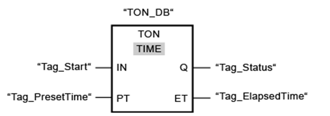
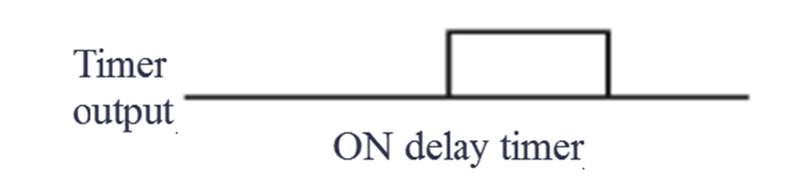

.png)
TON (On-Delay)
- TON stands for Timer ON delay.
- It is a common timer function block in PLCs used to delay turning ON an output or action for a specified time after the input signal becomes TRUE.
- The timer starts counting when the input condition is TRUE, and once the preset time elapses, the timer output becomes TRUE.


TON timers are used in applications such as delayed motor starting, safety delays, and sequencing operations where an action should occur only after a specific time delay.
How TON Timer Works
| Condition | Timer Behavior | Output (Q) |
|---|---|---|
| Input (Enable) = FALSE | Timer is reset to zero | Output Q = FALSE |
| Input (Enable) = TRUE | Timer starts counting from 0 | Output Q = FALSE until time elapsed |
| Time elapsed >= preset | Timer output Q becomes TRUE | Output Q = TRUE |
Explanation of Components
- TON Instruction: When the StartButton is pushed, the TON timer starts accumulating time.
- IN (Input): The signal that triggers the timer (usually a BOOL).
- PT (Preset Time): The time delay setting (e.g., 5 seconds).
- ET (Elapsed Time): The current time counted by the timer.
- Q (Output): The timer output (TRUE after preset time).
Pulse Timing Diagram

PLC Ladder diagram for Timers
We can use the Generate-ON-delay or ON delay timer instruction to delay the setting of the Q output by the programmed duration PT. The instruction is started when the result of the input IN changes from 0 to 1 (positive edge).
You can monitor the current time value at the ET output of the Timer block. The timer value starts at T#0s and ends when the value of duration PT is reached. The ET output is reset as soon as the signal state at the IN input changes to 0.

We can use the Generate off-delay or off-delay timer instruction to delay resetting of the Q output by the programmed duration PT.
The Q output is set when the result of the logic operation (RLO) at input IN changes from 0 to 1 (positive signal edge).
Common Uses of TON
- Motor start delay
- Alarm delay
- Conveyor timing
- Star-Delta starter delay
- Safety debounce timing